Contents
- Librerias
- Tipo de precision en las variables
- Definiendo Variables simbolicas
- Definiendo la funcion de base radial
- Definiendo los operadores de la ecuacion de Stokes
- Realizando el calculo simbolico
- Obteniendo puntos de la malla
- Construyendo las matrices del sistema
- Programando las constantes del metodo BDF1 FBR
- Aplicando el metodo BDF1
Librerias
addpath('../Libs/AdvanpixMCT-4.4.5.12698') %% libreria de multipresicion addpath('../Libs/DivFree_libreria/') %% libreria de las funciones addpath('../Libs/distmesh/') %% libreria de la mallas
Tipo de precision en las variables
class_t = 'mp';
Tipo = @(foo) numeric_t(foo,class_t);
mp.Digits(50);
Definiendo Variables simbolicas
Nota la parte sumbolica puede ser ejecutada una sola vez centros = x2,y2 nodos = x1,y1
sym_vars = {'x1','y1','x2','y2','c','muu'};
syms(sym_vars);
Las variables x1,y1,x2,y2 siempre tiene que estar al principio y presentes
Definiendo la funcion de base radial
fbr = 1/sqrt(1 + c*((x1-x2)^2 + (y1-y2)^2));
Definiendo los operadores de la ecuacion de Stokes
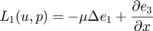
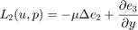
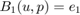
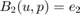
L1c = @(f) (-muu*laplacian(f(1),[x2,y2]) +diff(f(3),'x2')); L2c = @(f) (-muu*laplacian(f(2),[x2,y2]) +diff(f(3),'y2')); B1 = @(f) (f(1)); B2 = @(f) (f(2)); L1 = @(f) (-muu*laplacian(f(1),[x1,y1]) +diff(f(3),'x1')); L2 = @(f) (-muu*laplacian(f(2),[x1,y1]) +diff(f(3),'y1'));
Operadores para obtener la presion
%para obtener la presion Px = @(f) diff(f(3),'x1'); Py = @(f) diff(f(3),'y1');
Juntando los operadores en 2 celdas
OperadoresY = {L1c,L2c,B1,B2}; %operadores para el anzatz
OperadoresX = {L1,L2,B1,B2,Px,Py}; %operadores que le vamos aplicar al anzatz
Realizando el calculo simbolico
disp('comenzando el calculo symbolico') var_c = Tipo('0.1'); var_muu = Tipo('1'); [fbrGram,fbrAnzatz] = Fbr_Sym_Anzat(sym_vars,fbr,OperadoresY,OperadoresX,var_c,var_muu); disp('fin del calculo symbolico')
comenzando el calculo symbolico fin del calculo symbolico
Fbr_Sym_Anzat nos regresa las siguientes celdas:
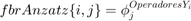
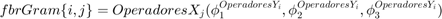
Donde:
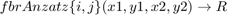
y
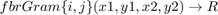
Obteniendo puntos de la malla
[ P_ni, P_f ] = gridmakercirlceuni(10);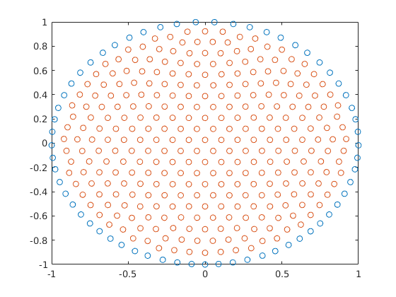
%transformamos los puntos a tipo Multi presicion P_ni = Tipo(P_ni); % P_in = puntos interiores P_f = Tipo(P_f);% P_f Puntos de Frontera
Construyendo las matrices del sistema
Ver seccion 3.2 del articulo
Definiendo los centros las funciones de base radial
Centros = {P_ni ,P_ni, P_f ,P_f };
Se uliliza la funcion BuildMGram para construir las matrices
M_phi1 = BuildMGram(fbrAnzatz(:,1),{P_ni},Centros,Tipo);
M_phi2 = BuildMGram(fbrAnzatz(:,2),{P_ni},Centros,Tipo);
M_Lphi1 = BuildMGram(fbrGram(:,1),{P_ni},Centros,Tipo);
M_Lphi2 = BuildMGram(fbrGram(:,2),{P_ni},Centros,Tipo);
M_Bphi1 = BuildMGram(fbrGram(:,3),{P_f},Centros,Tipo);
M_Bphi2 = BuildMGram(fbrGram(:,4),{P_f},Centros,Tipo);
Interpolation_matrixPx = BuildMGram(fbrGram(:,5),{P_ni},Centros,Tipo);
Interpolation_matrixPy = BuildMGram(fbrGram(:,6),{P_ni},Centros,Tipo);
Por ejemplo M_phi1 = BuildMGram(fbrAnzatz(:,1),{P_ni},Centros,Tipo); esta linea equivale a lo siguiente:
M_phi1 =
[ BuildMGram(fbrAnzatz(*1*,1),{P_ni},{P_ni}=centros{*1*},Tipo), ... BuildMGram(fbrAnzatz(*2*,1),{P_ni},{P_ni}=centros{*2*},Tipo), ... BuildMGram(fbrAnzatz(*3*,1),{P_ni},{P_f}=centros{*3*},Tipo), ... BuildMGram(fbrAnzatz(*4*,1),{P_ni},{P_f}=centros{*4*},Tipo)]y Por ejemplo si A=BuildMGram(fbrAnzatz(4,1),{P_ni},{P_f}=centros{4},Tipo)
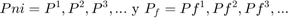
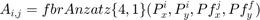
Programando las constantes del metodo BDF1 FBR
Creando el sistema del lado izquiero del methodo bdf1 en funcion del paso dt
sistema_bdf1dt = @(dt) [M_phi1 + dt*M_Lphi1 ; ... M_phi2 + dt*M_Lphi2 ; ... M_Bphi1; ... M_Bphi2; ... ];
Obteniendo la solucion exacta y las fuentes de la ecuacion
[f1,f2,u_exact1,u_exact2,p_x,p_y] = Exact_sol(var_muu,Tipo);
Creando el lado derecho del methodo bdf1
RHS_bdf1 = @(dt,T,Y1,Y2) vertcat( dt*f1(P_ni,T) + Y1, ... dt*f2(P_ni,T) + Y2, ... u_exact1(P_f,T),... u_exact2(P_f,T));
Definiendo las constantes
steps = 5;
dt = mp('1/100');
Sistema_bdf1 = sistema_bdf1dt(dt);
Definiendo el tiempo inicial y las condiciones inicales
T = 0; yinicial1= u_exact1(P_ni,T); yinicial2= u_exact2(P_ni,T);
Aplicando el metodo BDF1
for i=1:steps disp(i); %incrementando el tiempo T = T + dt; b = RHS_bdf1(dt,T,yinicial1,yinicial2); %resolviendo el sistema Lambda = Sistema_bdf1\b; %obteniendo la solucion yinicial1= (M_phi1*Lambda); yinicial2= (M_phi2*Lambda); %calculando el error Errorpx= (Interpolation_matrixPx*Lambda)-p_x(P_ni,T); Errorpy= (Interpolation_matrixPy*Lambda)-p_y(P_ni,T); y1_exact = u_exact1(P_ni,T); y2_exact = u_exact2(P_ni,T); error1=max(abs(yinicial1-y1_exact)); error2=max(abs(yinicial2-y2_exact)); errorppx=max(abs(Errorpx)); errorppy=max(abs(Errorpy)); fprintf('El error del campo vector es %d \n',double(max(error1,error2))) fprintf('El de la precion es %d \n',double(max(errorppx,errorppy))) end %%%%%%%%%%%%%%%%%%%%%%%%%%%%%%%%%%%%%%%%%%%%%%%%%%%%%%%%%%%%%%%%%%%%%%% %%%%%%%%%%%%%%%%%%%%%%%%%%%%%%%%%%%%%%%%%%%%%%%%%%%%%%%%%%%%%%%%%%%%%%%
1
El error del campo vector es 1.736142e-05
El de la precion es 9.322428e-09
2
El error del campo vector es 5.604454e-05
El de la precion es 4.197824e-08
3
El error del campo vector es 1.104198e-04
El de la precion es 4.333718e-08
4
El error del campo vector es 1.767361e-04
El de la precion es 5.251770e-08
5
El error del campo vector es 2.547016e-04
El de la precion es 6.957180e-08